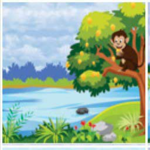
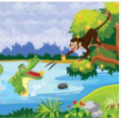
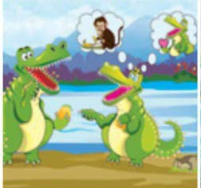
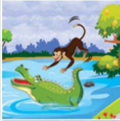
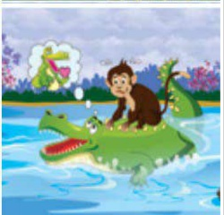
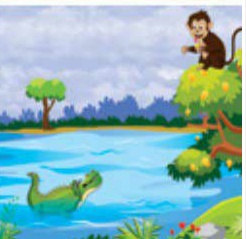

Once upon a time, a clever monkey lived in a tree that bore juicy, red rose apples. He was very happy. One fine day, a crocodile swam up to that tree and told the monkey that he had traveled a long distance and was in search of food as he was very hungry. The kind monkey offered him a few rose apples.
The crocodile enjoyed them very much and asked the monkey whether he could come again for some more fruit. The generous monkey happily agreed.
The crocodile returned the next day. And the next. And the next one after that. Soon the two became very good friends. They discussed their lives, their friends and family, like all friends do. The crocodile told the monkey that he had a wife and that they lived on the other side of the river. So the kind monkey offered him some extra rose apples to take home to his wife. The crocodile’s wife loved the rose apples and made her husband promise to get her some every day.
Meanwhile, the friendship between the monkey and the crocodile deepened as they spent more and more time together. The crocodile’s wife started getting jealous. She wanted to put an end to this friendship. So she pretended that she could not believe that her husband could be friends with a monkey. Her husband tried to convince her that he and the monkey shared a true friendship.


The crocodile’s wife thought to herself that if the monkey lived on a diet of rose monkeys, his flesh would be very sweet. So she asked the crocodile to invite the monkey to their house.
The crocodile was not happy about this. He tried to make the excuse that it would be difficult to get the monkey across the river. But his wife was determined to eat the monkey’s flesh. So she thought of a plan. One day, she pretended to be very ill and told the crocodile that the doctor said that she would only recover if she ate a monkey’s heart. If her husband wanted to save her life, he must bring her his friend’s heart.
The crocodile was aghast. He was in a dilemma. On the one hand, he loved his friend. On the other, he could not possibly let his wife die. The crocodile’s wife threatened him saying that if he did not get her the monkey’s heart, she would surely die.

So the crocodile went to the rose apple tree and invited the monkey to come home to meet his wife. He told the monkey that he could ride across the river on the crocodile’s back. The monkey happily agreed.

As they reached the middle of the river, the crocodile began to sink. The frightened monkey asked him why he was doing that. The crocodile explained that he would have to kill the monkey to save his wife’s life.

clever monkey told him that he would gladly give up his heart to save the life of the crocodile’s wife, but he had left his heart behind in the rose apple tree. He asked the crocodile to make haste and turn back so that the monkey could go get his heart from the apple tree.
The silly crocodile quickly swam back to the rose apple tree. The monkey scampered up the tree to safety. He told the crocodile to tell his wicked wife that she had married the biggest fool in the world.